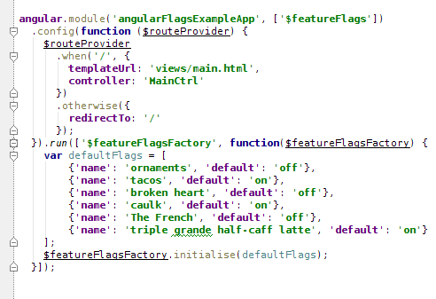
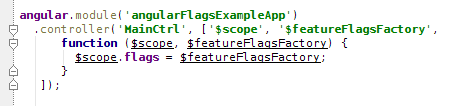
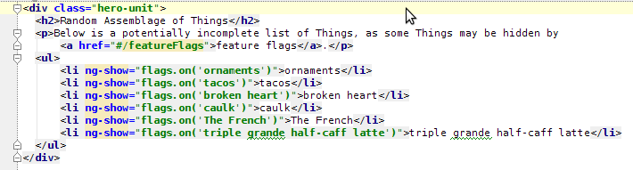
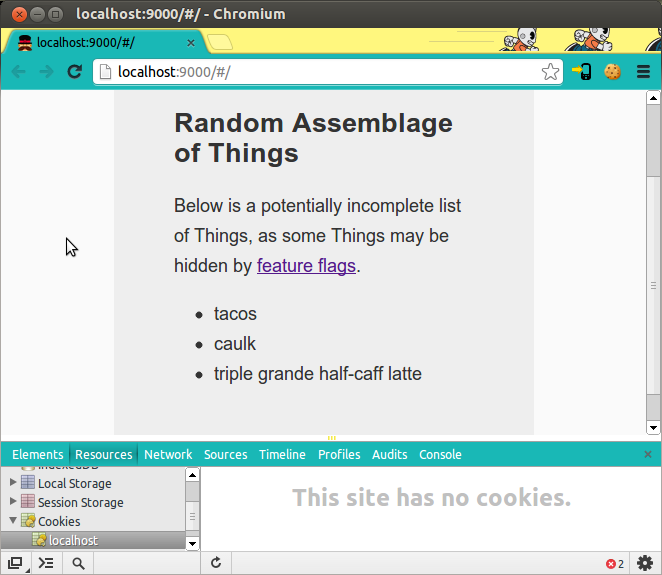
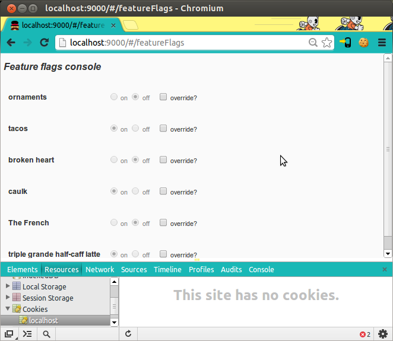
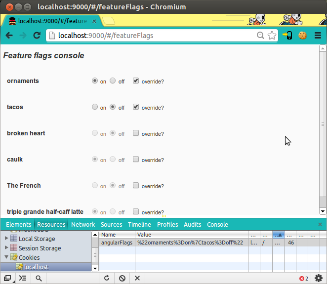
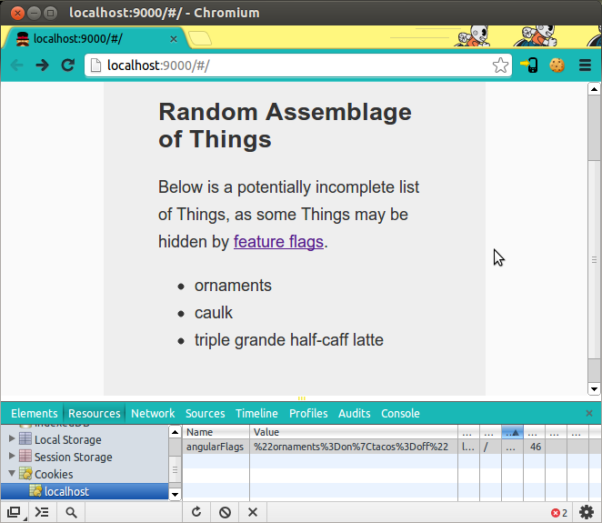

Angular-flags is an implementation of feature flags for an AngularJS app, designed to support branch by abstraction in service of trunk-based development. This cookie-based approach to feature flags management is a port of rack-flags. Its key strength is that the default feature flag setting can be overridden on a per-user basis with browser-cookies.
Adding angular-flags to your app
Angular-flags was designed to be simple to shim into an existing Angular app. The rest of this page will describe the angular-flags reference app, a simple yeoman-generated angular app with angular-flags shimmed in.
- Download angular-flags with bower
Ensure you have bower installed with node (
npm install -g bower), then
- Best:
add angular-flags to your
bower.json file an run bower install
- Second best:
bower install angular-flags
- Add
$featureFlags module dependency and initialise the default flags

Initialisation is from a JSON array of flag objects defining "name" and "default" ("on" or "off") attributes. Note that this example has the flags coded into the javascript, which is fine if your flags aren't meant to change between deployments. More dynamic flags are supported by simply using an AJAX resource to return the flags array for initialisation.
- Query flag state by name to show/hide features
Best practice for feature flags is to keep evaluation as close to the view as possible. This is easily achieved with angular-flags by adding the
$featureFlagsFactory onto your controller $scope and referencing it in your view via the ng-show directive.
In your controller:

And in your view:

Overriding flag settings to change the shown/hidden state of features
- When no flags are overriden

As a user, my view of the world represents the default on/off state of the site's feature flags as initalised.
- Viewing the Feature Flags admin console

Angular-flags adds a #/featureFlags route to your Angular app. Navigating to this route shows all flags and their current on/off state.
- Overriding flags on the admin console

Each flag may be overridden and set to a new value. Note the new cookie value representing the state of the two overridden flags.
- Viewing the site with overridden flags

Navigating back to the previous page shows the effect of the cookie overrides. Obeying the overrides, "tacos" is now hidden but "ornaments" is shown.